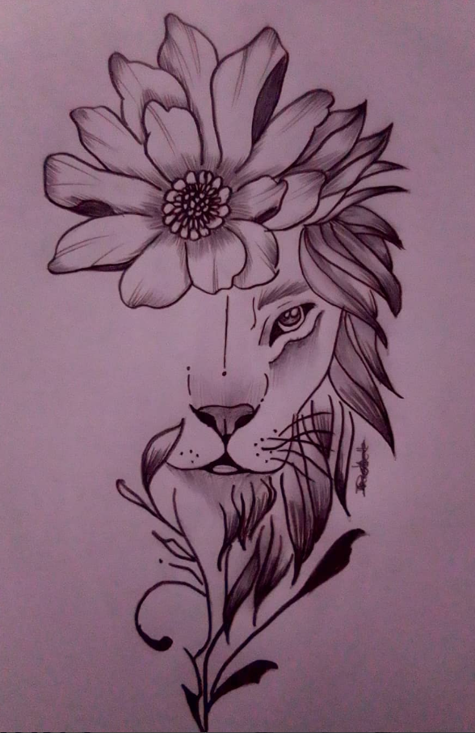

Jeanu-Michelle | Artist Portfolio
Art has become a part of my everyday life. It is difficult to go about my day without seeing wonder around me.
I have been creating art for the better part of ten years.
I do not limit myself to one medium or genre. I create to explore the endless possibilities of what a piece of art can become.

I am a South African artist based in Hermanus. My work often explores the quiet tension between vulnerability and strength.
I work primarily with traditional mediums, creating pieces that linger in emotional spaces. Femininity, perception, and inner conflict frequently weave through my work.
Rather than strict realism, I am drawn to atmosphere and mood. I often explore the idea of intentional imperfection — a personal journey away from perfection and toward growth.
This series explores feminine presence and autonomy. The woman exists fully within her own power — not needing a man, yet choosing to welcome him.
In the final piece he approaches her, looking upward in awe. The colour contrast against earlier monochrome works reflects his passion and desire.


This series depicts sea animals rendered in graphite and intentionally left colourless, symbolising their fading presence as endangered creatures.
Red elements represent each life lost at the hands of humanity.


Created at the end of my high school years during a period of experimentation and personal loss.
Sharp glass fragments symbolise the harsh reality of grief, while flowers represent the fragile fantasy of holding on to what we have lost.



My work is exploratory in nature. Each piece evolves through emotion, instinct, and atmosphere.
The medium shifts depending on the mood of the work, allowing the piece itself to guide the process and the form it ultimately takes.
Email: mabelle03reve@gmail.com
Phone: +27 62 300 3812
Instagram: @michelle_mabelle_artz
The artwork shown here represents a portion of my collection. For more pieces please visit my social media.